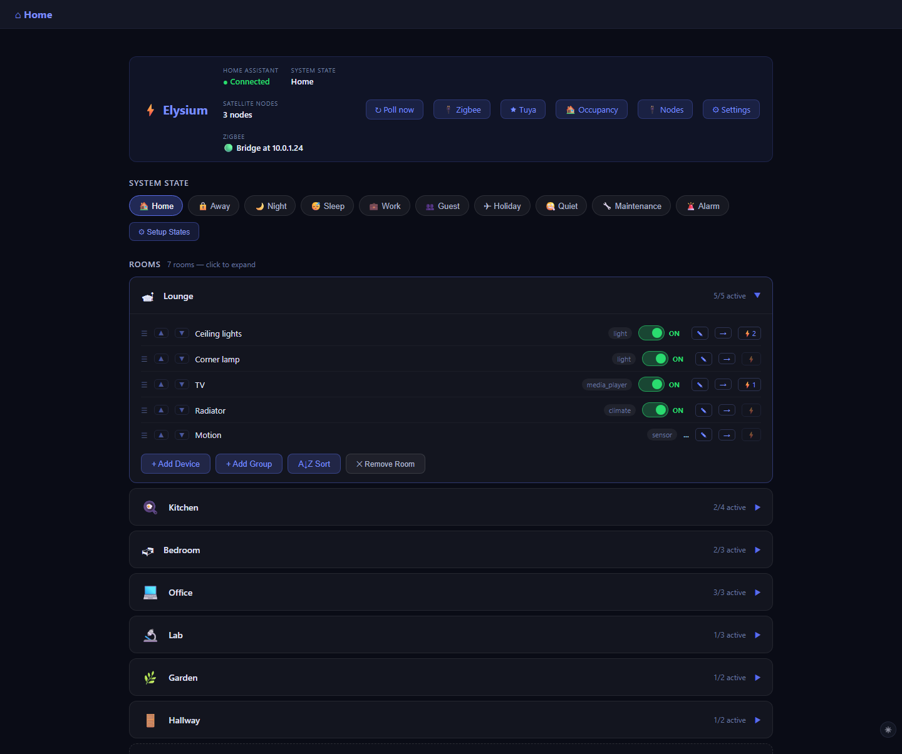
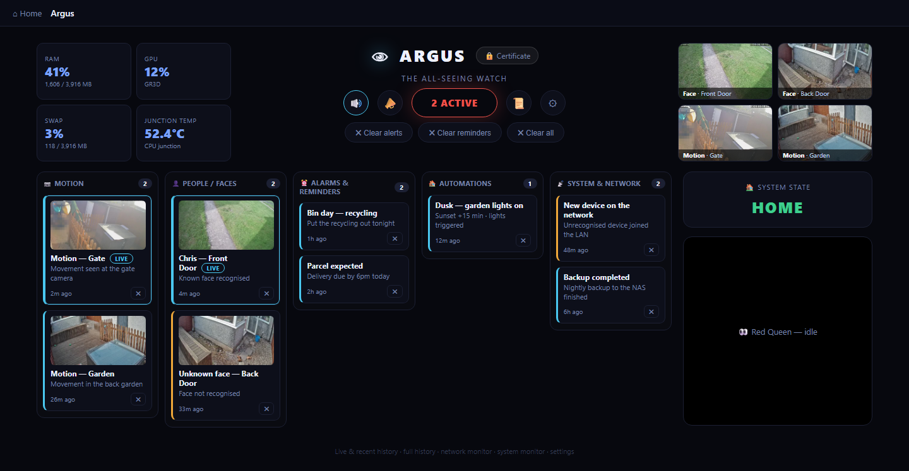
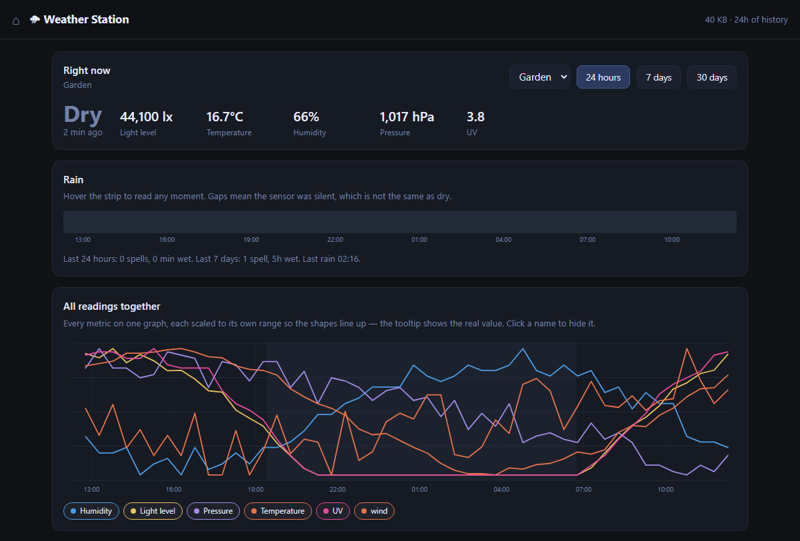
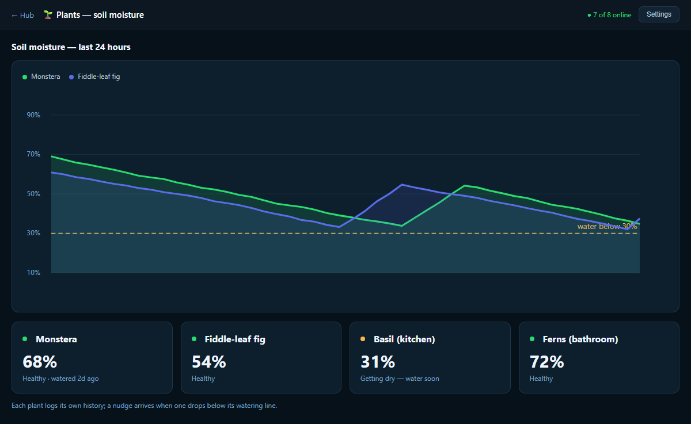
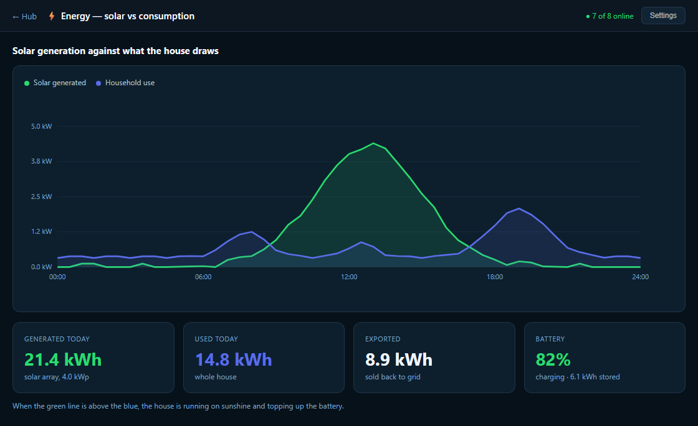
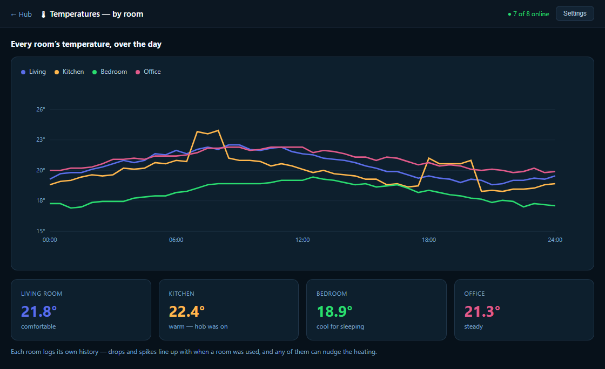
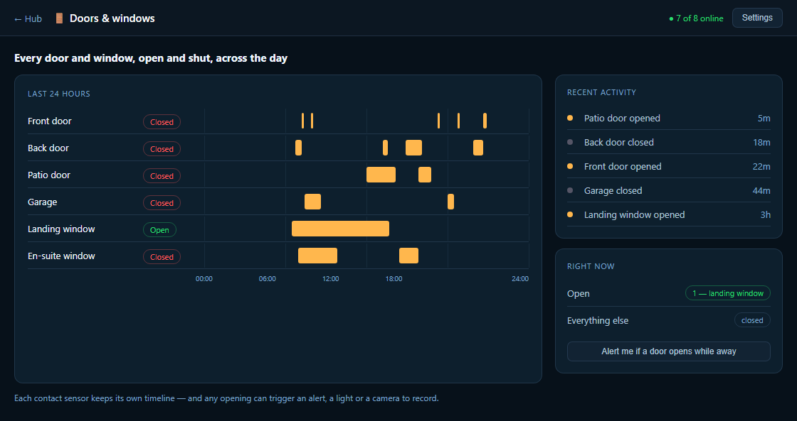
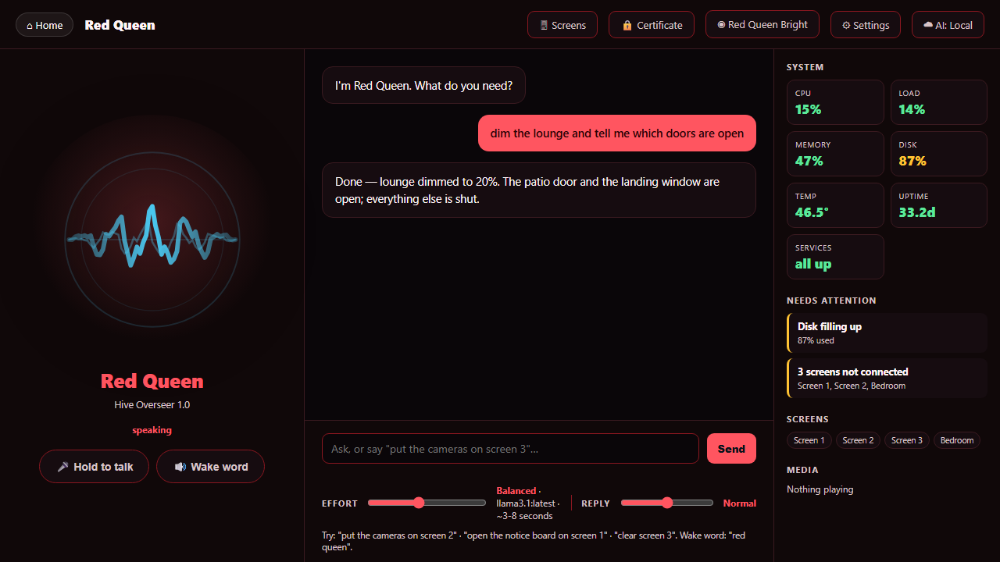

A smart home that answers to you, not the cloud
Elysium is a local-first home automation platform we design, build and host on hardware in your own home. Lights, climate, cameras, sensors and your own private AI on one dashboard — no monthly subscription, nothing leaving the building.
Every room and device on one screen
Group devices by room and run the whole house from a single dashboard — phone, tablet or wall panel.
Lights, climate and scenes
Dim a light, set its colour, nudge the heating or fire a whole-room scene with a single tap. One driver layer speaks to Zigbee, Wi-Fi, plugs, bulbs and your existing Home Assistant setup, so mixed-brand kit behaves like one coherent system rather than a drawer full of apps.
- One-tap scenes for morning, evening, film night and away
- Rooms and sub-groups you arrange by dragging
- Wall panels, phones and tablets share one live view

Lighting
Dim, colour and group every light in the house.
Climate
Heating and temperature, set per room.
Scenes
One tap sets a whole mood across rooms.
Plugs & switches
Anything on a socket, under control.
Media
Music and screens across the house.
Sensors
Doors, motion, temperature and presence.
See who's here — and know who they are
Live views, motion, and recordings held on your own recorder. Argus pulls it all together into one command centre for the house.
Live views, recordings and arrivals
Watch every camera at once and scrub back through recordings. Number-plate recognition and face detection turn a driveway camera into an arrivals board — a known plate becomes a name, and Argus flags they're on site the moment they pull in. Footage stays on your own NVR, not a camera-maker's subscription cloud.
- Live multi-camera views and scrub-back recordings
- Motion, line-crossing and exclusion zones you draw yourself
- Number-plate and face detection — a plate becomes a person

The whole house, measured and remembered
Solar, temperatures, soil-moisture, rain, doors and human detection — logged locally, drawn as history graphs, ready to trigger automations.
Readings you can trust, history you can keep
Watch solar against household draw, room temperatures, plant-pot moisture, which doors are open and who's home. Every reading goes to a single store on your own hardware, so a temperature from two months ago is one tap away — no export limits, no data locked behind an account.
- Solar and energy — generation against consumption
- Room temperatures and humidity, logged over time
- History graphs on every sensor, held on your own hardware

And every reading can trigger an action
Sensors aren't just for looking at. Any reading can drive an automation on your own hardware — water the plants when the soil dries, bring the washing in when rain's detected, turn a light on when someone's about, or lift the heating when a room cools. You set the rules; the house follows them.
- Plant soil-moisture — with a watering threshold per plant
- Human detection — indoors by presence, outdoors by camera
- Rain detection and your own outdoor weather station

A graph for every sensor



Your own AI, living in the house
Ask the house a question in plain language — by voice or in chat — and it answers, and acts. Red Queen runs on the box in your home, so the conversation never leaves it.
Voice, chat and control — all private
Tell Red Queen to dim the lounge, ask which doors are open, or set the morning heating, and it does it. Running on your own hardware, it sees what your dashboard sees — devices, cameras, calendar and sensors — so it answers about your home, not just the internet. Nothing is streamed to a third party, nothing sold on.
- Voice and chat, on a wall panel or your phone
- Controls lights, climate, scenes and devices by name
- Answers from your own home — doors, temperatures, who's in

Hear Red Queen answer
One take, her own voice: the time, who's nearby, tomorrow's weather and your top post — all from your own data, on the box in the house. Tap the video for sound.
You own it. It stays yours.
Elysium runs on a small server in your home. That single decision is what makes it private, reliable and free of anyone else's subscription.
It runs on your hardware
A quiet server in your home holds the platform, recordings and history — you own the box and everything on it.
Works with the internet down
Controls, cameras and automations run over your own network, so if the broadband drops the house keeps working.
Private by default
Camera feeds, voice and routines stay inside the building — no cloud account listening in, nothing resold.
No lock-in
No subscription and no external database — move on whenever you like, and the hardware and its data go with you.
Let's give your home a nervous system
Tell us what your house should do, and we'll design, build and install a local-first Elysium platform that does it — then keep it running.
Start a project →